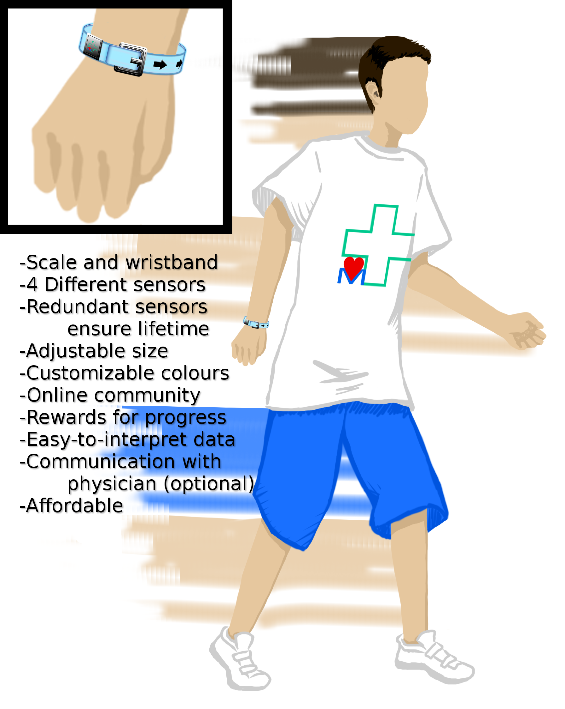
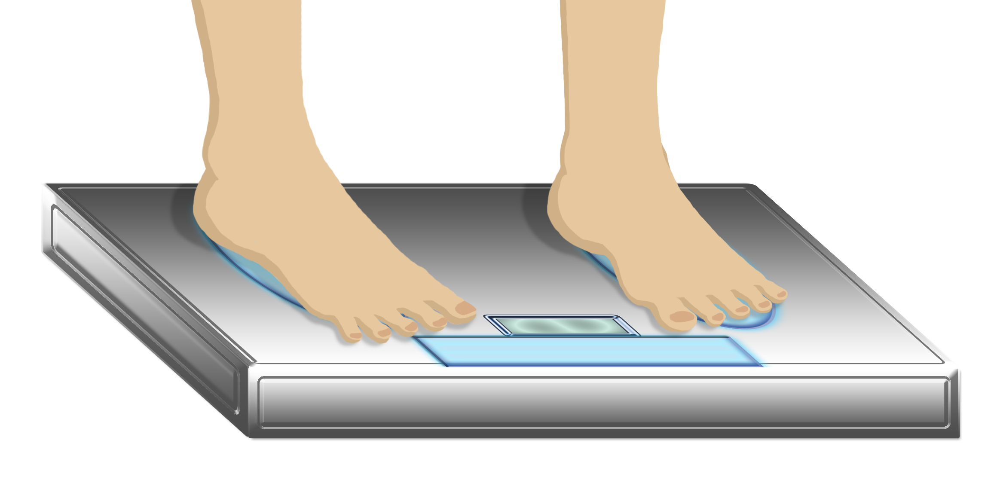

Obesity is becoming an epidemic in North America. Access to fast food, poverty, and motor transportation has caused obesity rates in both the United States and Canada to sky rocket within the past decade. In order to address this problem, TechMedical Inc. has created the TM-Pulse: a health monitoring device that supports doctor-patient communications, mainly targeted towards youth.
The TM-Pulse will provide three main benefits to its users. Firstly, patients will be able to monitor their own health progression on a clearly labeled and easily understood graph. Traditional monitor devices only display numbers or percentages, which can be difficult to interpret. With a graph, users will be able to understand their conditions effortlessly, and see their progress over a period of time. Secondly, users will be able to quickly and conveniently send their doctors medical data that would usually have to be taken from an examination at the doctor's office. Studies conducted by the team at TechMedical have shown that most doctors find it difficult to communicate with their patients on the topic of obesity, but the TM-Pulse will allow patients to avoid any embarrassment and let doctors give faster diagnoses. Finally, the TM-Pulse will allow the user to send the collected data to a social media and game website called Fitocracy. This site rewards users for their physical/health progress (based on the data collected in the TM-Pulse) by allotting them points in an interactive game, and will allow users, especially youth, to socialize, to compete, and to encourage each other to exercise.
The TM-Pulse comprises of two components: a wristband and a larger, box-shaped dock. The wristband has three different sensors: a piezoelectric pulse sensor, an infrared blood oxygen level sensor, and a bioelectric impedance communicator. The dock will have a scale as well as a bioelectric impedance sensor. These sensors will take measurements regularly and the device will process the data. By analyzing the length of physical activity and oxygen levels as well as overall body composition over time, the TM-Pulse will have ample data to provide a reliable reading of user's health over a period of time. This data will then be uploaded to the user's computer via a USB cable, where designated software will graph the data.
The TM-Pulse is a revolutionary step in medicine. The innovations in its function, structure and technologymake it distinct from other competing monitors, in terms of price and application. It bridges the communication gap between doctors and patients, and will forever transform obesity treatment. Then, by associating social media and games with exercise, the TM-Pulse will also capture youth's attention and make them aware of their own health as they track their progress. These factors, along with the exploding market, ensure the success of TechMedical and its product, the TM-Pulse.
After reading about this exciting product, you may be wondering how you too can participate in this upcoming healthcare revolution. We are currently in the investment and fundraising portion phase of development.
For now, you can talk to us about an investment or any thoughts, like us on Facebook, or come visit us at our next business exposition.